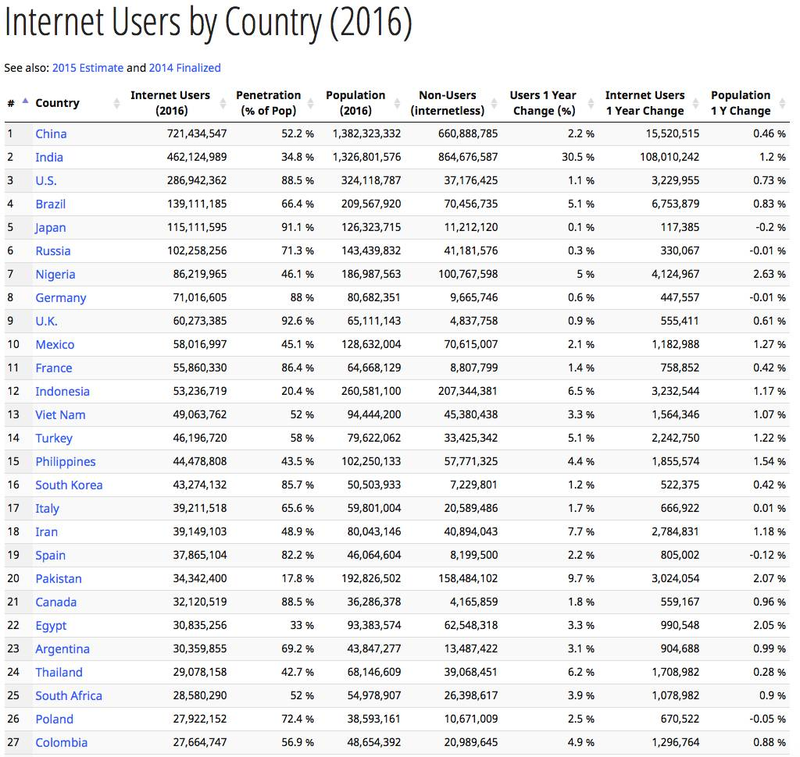
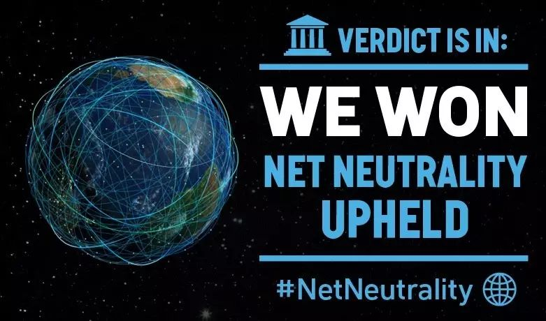
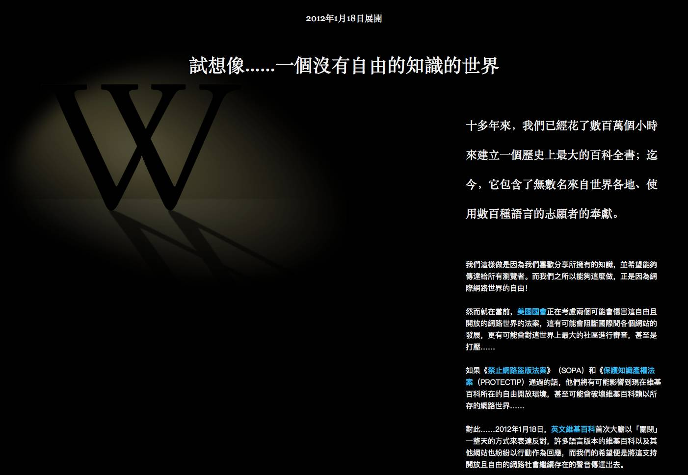

互联网的好消息，互联网的坏消息
Contents

互联网开始了下半场，是最近比较热的话题。Keso写了一篇相当不错的文章，我不认为互联网到了下半场，但是的确有很多必须注意的坏消息，这些坏消息会对互联网的未来有巨大的影响。当然，好消息也还是有的。
先来看好消息。好消息是互联网用户数未来仍然会有很大增长空间，虽然可能增加起来难度比过去大。到2016年，整个国家100%人口都联网的只有一个国家，冰岛。其他发达国家，基本都在90%上下，而中国才刚刚超过50%，被认为下一个增长点的印尼，仅有20%多一点。

图1 互联网用户比例，来自 internetlivestats.com
对于创业者来说，这意味着还有机会找到足够多的人提供他们一种完全不同的应用，从而打破现在的巨头垄断。比如说，前几个月开始被众人所知的“快手”，它默默的开拓了一个主流视野之外的用户群，直到发展到了足够大才被广泛注意到。这样的机会仍然存在，尽管我们今天已经觉得互联网垄断已经到了前所未有而高度。当然，就算平台级的创业项目难度变得非常大，仍然有很多“满足一部分人需求”的产品能活的不错，受益于远远超过10年前的联网用户数量，就算是这些小众产品，用户数量超过10年前的大众产品也不是不可能。互联网距离到达极限还有很远的距离，这算是个好消息。
但除此之外，就都是不太好的消息了。今天我们说起互联网的时候，必须清晰的认识到，它和我们在10年前以及20年前所讲的互联网，区别是相当大的。20年前我们认为互联网是平等、廉价、全球性的基础设施，这种预期在未来应该会发生变化。现在我们正站在历史的分界线上。
首先是垄断。这是一个所有人都能体会到的问题，在中国你总是离不开BAT的产品，但就算BAT也不是平等的，其中最离不开的应该是腾讯。在中国之外，就是Facebook，以及它一系列收购来的产品，比如Instagram或者Whatsapp。这种垄断到了多夸张的地步，只要看一下手机的电量统计就知道了。商业化的互联网是一代又一代的大公司推动的，曾经是雅虎，后来是Google，再后来是Facebook。Google当然也是垄断者，但它是中立公平分发流量的垄断者，和Facebook不是一回事。从社交网络的时代开始，垄断者们则试图把流量留在自己的体系内。PC互联网的末期(2008年）这种情况还不算严重，但随着移动互联网时代的到来，小屏幕上同时使用多个应用不符合用户系统，人们就越来越多的黏在某一个应用上，就像你现在通过微信看这篇文章。
在这个时期，垄断者们开始试图用资本来扩充自己。上网年头多的人应该还记得过去腾讯经常因为模仿和山寨挨骂，今天它已经不太这么做了，变成了收购。回头看看，那个山寨和模仿的年代实际上比今天公平，新产品仍然可以自己独立发展下去。而今天，垄断+资本带来的威力是决定性的。想想刚刚结束的打车软件大战就知道了，拿了腾讯投资的滴滴就是比别人竞争优势大的多。同样的情况也出现在美国，无论Instagram还是Whatsapp，被Facebook收购之后，意味着获得远远超过竞争对手的优势，同类产品基本死定了。当然，这个过程中也有少数例外，比如Telegram的兴起，这是极其特殊的特例，一方面是创始人Durov兄弟有足够的钱，另外一方面是他们的理念和特性，再加上打了隐私这张牌，从而让他们能够占有一定市场。尽管Telegram有诸多优势和偶然性，它实际占领的用户数量还是远远低于Facebook和Whatsapp。无论是中国还是中国之外，人们都在经历前所未有的垄断状况，且没什么办法改变这种状态。
这并不是最坏的消息，更糟糕的是川普和共和党掌权之后，来之不易的“网络中立”原则必然会受到重挫。今天共和党人已经发誓会在最短时间内推翻这一原则。网络中立原则是美国各大互联网公司们多年奋斗，从联邦通讯委员会打到最高法院，最后在奥巴马的支持下才勉强获胜的战果，但这个成果很快就会消失了。
网络中立是什么？简单概括就是运营商不能阻挡、限速或者付费提高带宽优先级。这些原则保证了互联网本身成为基础设施，不会被接入商控制。如果没有这些原则，运营商可以决定最终用户访问哪些网站更快，甚至哪些不能访问。这种感觉有点接近中国的删贴和审核系统，只是看起来更加商业性。即，最终阻挡不阻挡，速度快不快可以花钱解决。但最终发展下去，对于新的或者小的互联网公司，它甚至比内容审核还不公平，因为审查系统对所有人都是公平的，红线是什么大家大致是能猜测到的，严格一点或者放松一点也都可以自己掌握。运营商主导的网络控制更加难以捉摸，有可能是商业性的，也有可能是某些特殊情况。比如，华盛顿邮报惹了某位运营商股东不高兴，他干脆把用户访问华邮网站的速度限制到5K。虽然他没有能力审核或者删贴，但通过速度的控制，最终是可以使对方的网站不可用用的。这是中国互联网创业者早就熟知的感觉，美国创业者未来应该也会体验到，甚至更诡异，更不可琢磨。在前面几年里面，支持网络中立原则的名人众多，其中大量是互联网的创建者，比如WWW的提出者Tim Berners-Lee，互联网基础架构的发明者，互联网之父Vint Cerf，以及苹果联合创始人Woz。反对一方也有名人，比如Peter Thiel，大家都知道他是川普的支持者，所以你可以想象未来的状况相当不妙。反对方的理由之一是“这么多年没有这个原则，互联网不也发展的好好的嘛”，就是，1590年才发明的显微镜，在此之前那么多年人类也活得好好的嘛。

图2，2015年1月，FCC宣布支持网络中立原则。很多公司给用户写信，用的就是“WE WON”这个词。然而这种胜利，我们仅仅赢得了2年时间。
极端的说，我们可以把美国放弃网络中立原则部分等同于“美国版的GFW”来看待，至少它具有成为这样东西的潜力。美国运营商们使用的技术也差不多，比如通过“深度包检测”用来探测和限制某些协议或者某些网站。美国网民大概也会学会中国用户千奇百怪的VPN和代理使用技能。
说到这里，不知道有多少人还记得2011年，美国各大互联网公司开展的反对SOPA运动（《禁止网络盗版法案》），那时候维基百科干脆把页面变成全黑，停止访问一天来提醒用户声援反对SOPA。这两件事是有一些相似的，都是看起来“目的单一”但一旦合法，后面的演变和发展就会超出控制，最终变得后患无穷，而它们的最终执行者，都是运营商们。SOPA同样是共和党参议员提出的，获得共和党大量支持，民主党以及加州各公司反对。最终，当时的总统奥巴马也站在了反对SOPA的行列，最终导致这个法案被撤回。科技公司和共和党的矛盾是一直存在的，并不是只是这次总统选举。取得胜利的那天，有一条特别感人的评论标题是这样的：
“互联网杀死了它的入侵者”
今天我们再来看这句话，简直充满了讽刺。并不是互联网杀死了它的入侵者，而是总统杀死了入侵者。SOPA恐怕在未来的几年还会卷土重来，下一次互联网恐怕不会有这么好运了。考虑到前面说的资本和垄断的增强，未来倒霉的几乎一定是小公司和创业者们。

图3，2012年1月18日，维基百科全站停止访问一天抗议，这是当天唯一能访问的页面。中文版见下面这张：

以及，还有更糟糕的，就是互联网用户的隐私和安全是否能够得到保护。我以前写过一篇文章，是关于各国的隐私法律状况的。在发达国家里面，美国算是隐私保护法律比较不严格的。如果你还记得之前FBI要求苹果公司开发一套后门系统的事情，应该会知道当时因此号召抵制苹果的名人是谁。没错，就是现在的总统川普。这几天英文的科技媒体纷纷在讨论未来美国的隐私，用户加密等等政策变化，这些恐怕都不会像过去一样了。互联网上最大的历史档案库， archive.org 是第一个明确意识到这种风险的，他们最近一直在筹资，目的是建立加拿大镜像，以便保证数据和用户隐私安全。
这些事情都给了我们一个明确的信号：互联网不再是是没有国界的了。在过去这些年里面，一直试图在互联网上划分国界的（并且很成功）的国家是中国。未来中国的经验甚至技术，大概会出口给很多国家，甚至是美国的运营商们。这是一件令人哭笑不得的事情。
随着全球化的结束，互联网的无边界时代大概也要结束了。顺便说一句，很多人认为加州人偏左是没脑子的，但实际上左右背后都是有利益权衡的。加州声音最大的科技企业为什么会偏左，是因为共和党在太多的政策上对他们有毁灭性影响。全球化时代最受益的公司是互联网公司们，他们可以用极低的成本赚到全世界的钱。如果互联网变成了有国界的，互联网公司的优势瞬间就没了，中国人最容易理解这种状况，所谓外国互联网公司在中国的失败魔咒，本质上就是这件事。
为什么要研究美国互联网会怎么样？因为美国始终是互联网风向的带头人，中国各种政策和发展从美国借鉴极大。中美两国总是互相影响，美国公司的垄断和中国公司的垄断如出一辙。如果美国运营商们开始通过限速和阻挡用户访问网站赚钱，这很可能就会成为一个各国运营商效仿的案例，尤其是中国，运营商从很多年前就不甘心只做流量管道，一直试图控制更多东西，这些多年积累的能量一旦爆发起来会相当惊人。
总之，一个新的互联网时代开始了。20年前我们认为互联网应该是平等，开放，无国界的，今天看来现实和我们的期望并不一致，当然，互联网创业远远没到下半场，只是未来的挑战会比之前大的多，已经存在的成功者会有更大的优势，新来的，祝你好运。
参考备注：
- 我以前写的关于互联网隐私和各国法律差异的文章 你正在为互联网上的“免费”付出什么？
- 关于Telegram的故事 Telegram传奇：俄罗斯富豪、黑客高手、极权和阴谋…
- 标题图：Image used under Standard license from Shutterstock.com （这张图是我们付费购买的，转载也可直接使用，不用换掉它）
Author Huo Ju
LastMod 2016-12-21